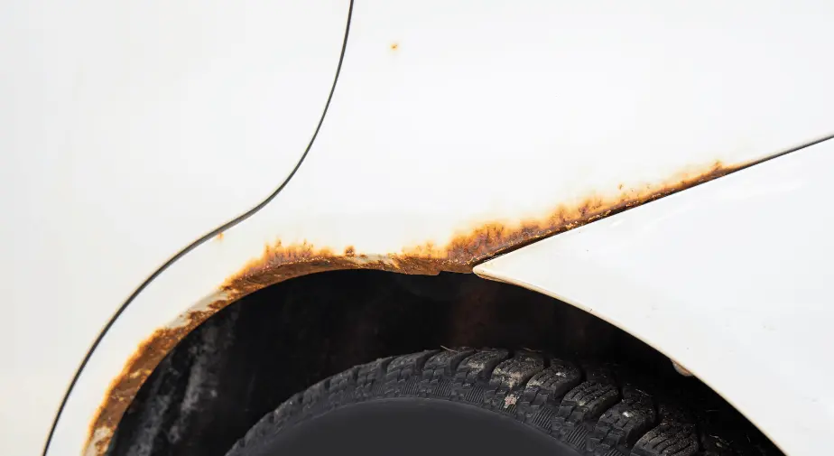

Rust Protection: How Road Salt Eats Your Car (and How to Stop It)
Salt doesn't rust your paint. It rusts everything underneath, where you can't see it — until it's too late.

What salt actually does
Road salt mixed with melting snow makes an electrolyte that speeds up rust wherever paint or factory coating is chipped — wheel wells, rocker panels, the underbody, brake lines. Once rust starts, it doesn't stop on its own.
The yearly routine
- October — undercoat. An oil-based undercoating ($150–$200 at a shop) creeps into seams and stays flexible all winter. Do it before the first salt hits the road.
- All winter — wash the underbody. Every 2–3 weeks, run through a wash with an underbody spray. Salt sitting on metal for months is what does the damage.
- Spring — inspect. Check rocker panels, wheel arches and the fuel and brake lines. Catch bubbles early — a $50 touch-up beats a $1,000 panel.
Watch: how to properly undercoat a rusted car
Wheels and caps
Winter is hard on wheels too. Salt corrodes alloy finishes and swells steel. If you run a second set of steel rims for winter, check the center caps and lug nuts for corrosion when you swap — a seized cap or rounded nut turns a simple tire change into a shop visit.
What it costs to ignore
A rusted brake line or fuel line is a safety failure, not a cosmetic problem. The $200-a-year routine is the cheapest insurance your car will ever get.
Related reading: How to wash road salt off your car in winter